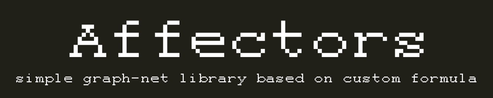

visual playground
каждый блок — буква, плюс блок старта «^» и блок конца «$». возбудитель проигрывает слова — связи учатся по front_affect и back_affect, затем активность идёт по графу сама: каждая вспышка приклеивает букву, слово заканчивается, когда лавина гаснет или срабатывает «$»
∞ — сеть говорит без остановки, слово за словом. самообучение подкрепляет собственные слова, законченные через «$»
уникальные, которых нет в словаре, по убыванию правдоподобия пар букв